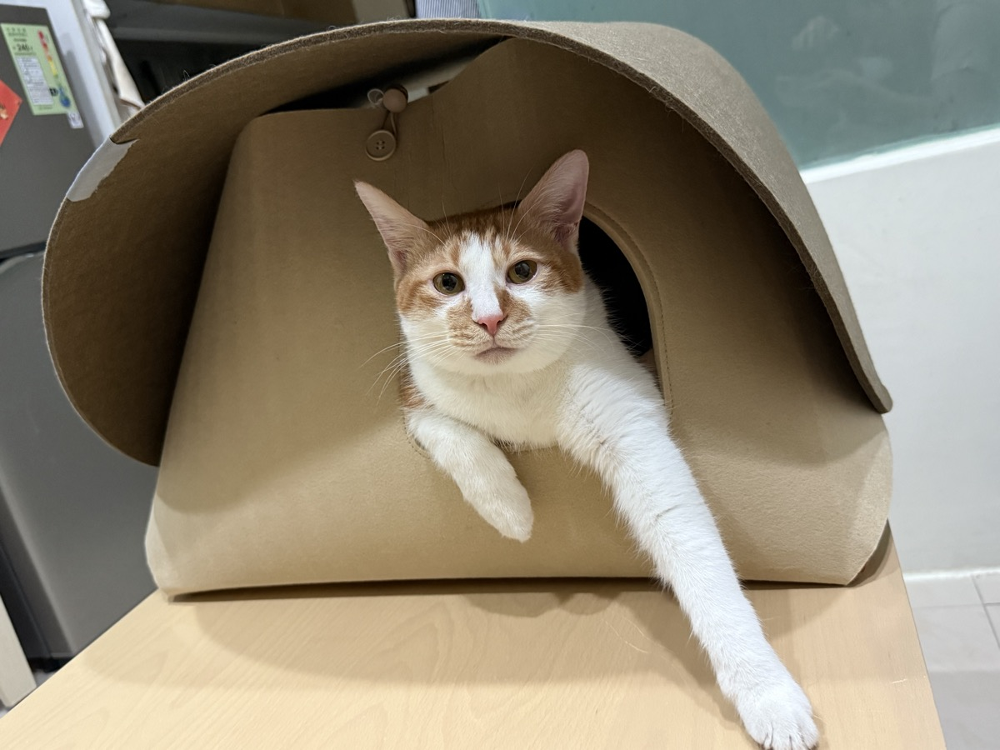
柑橘 #1 ♂ 男生
個性
愛討摸、好奇寶寶、慵懶，是隻脾氣有點差的貓界霸總
注意
脾氣較陰晴不定，生氣時會咬人。如果看到他大力甩尾巴＋炸毛，可以拿沙發上的毯子蓋住他，幫助他冷靜下來。

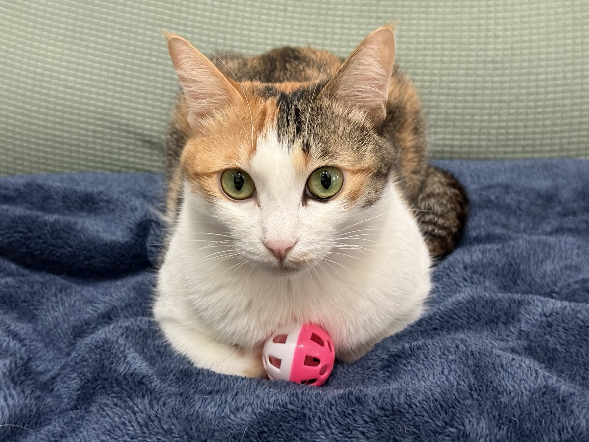
收前一天的碗 ✓ 完成
把昨天的水碗、飼料盤、濕食碗集中
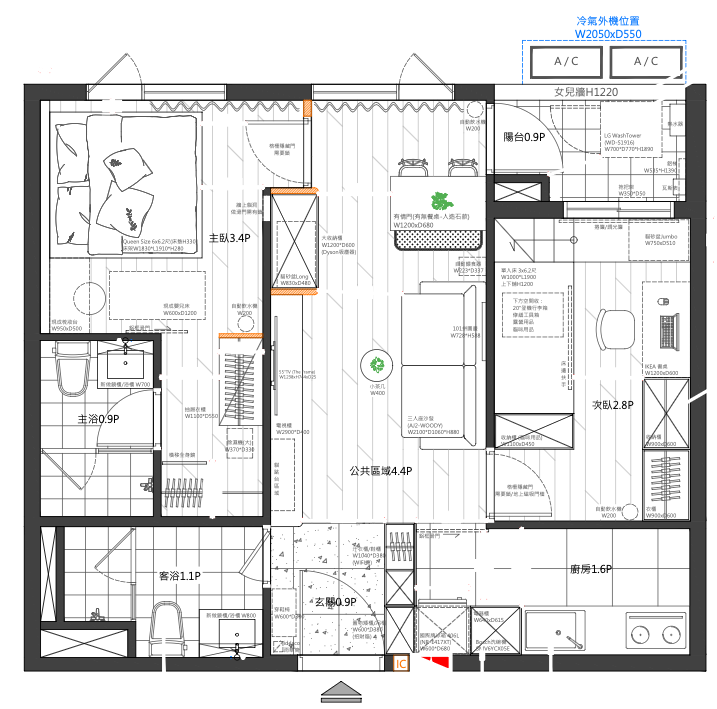
🔍 放大鏟貓砂 ✓ 完成
把便便鏟出來，丟到小盆子
吸地板 ✓ 完成
客廳 + 貓砂盆周圍重點吸一下
洗碗 ✓ 完成
把剛收的碗洗乾淨擦乾
陪玩 ✓ 完成
放飯前 10–15 分鐘，先讓牠們狩獵一下 ⏰
放飯 🍚 ✓ 完成
兩個碗各半份，記得換過濾水
梳毛 ✓ 完成
飯後幫忙梳梳毛，放鬆放鬆～
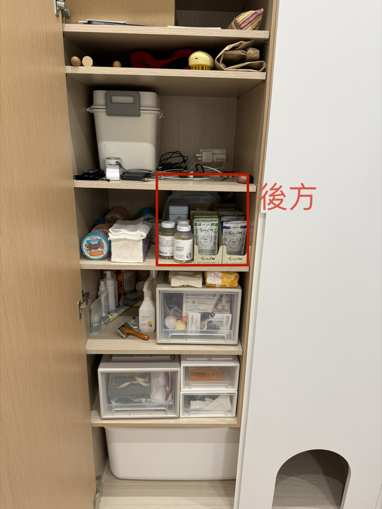
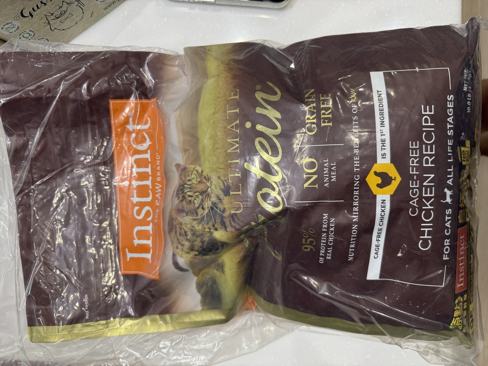
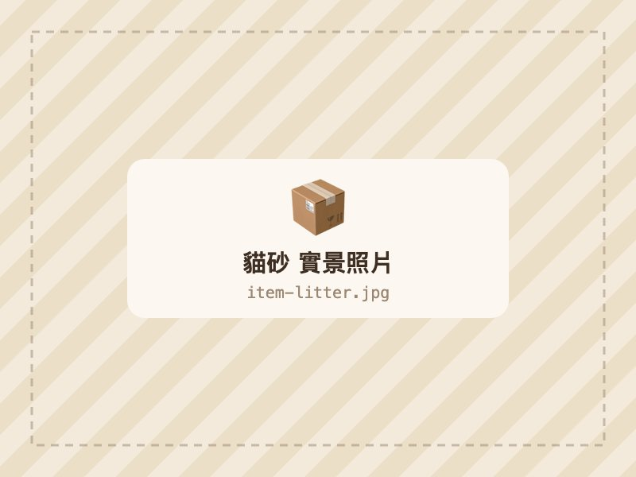
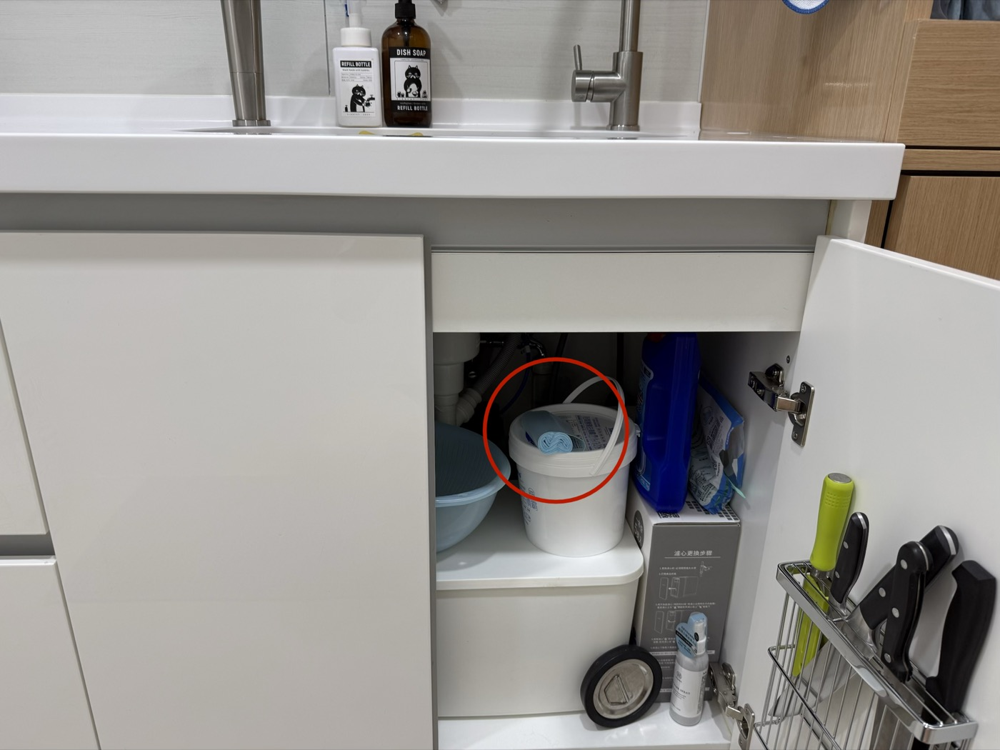
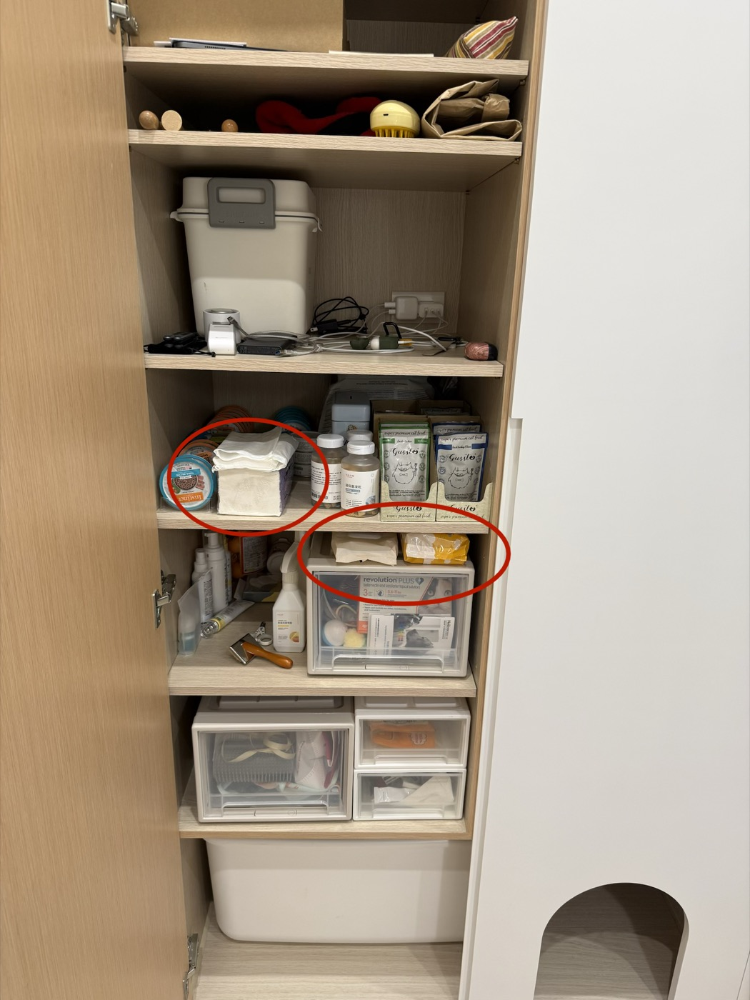
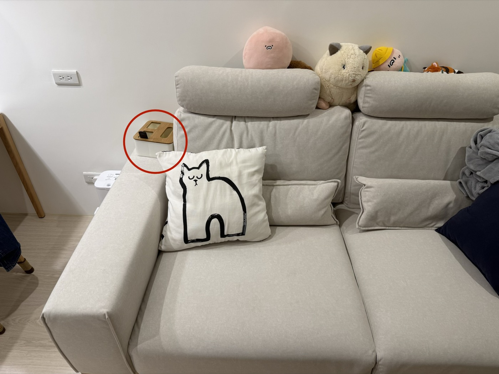
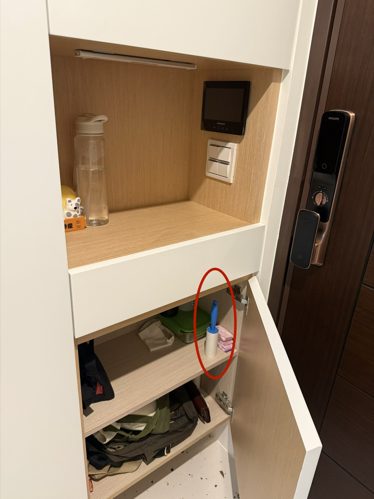
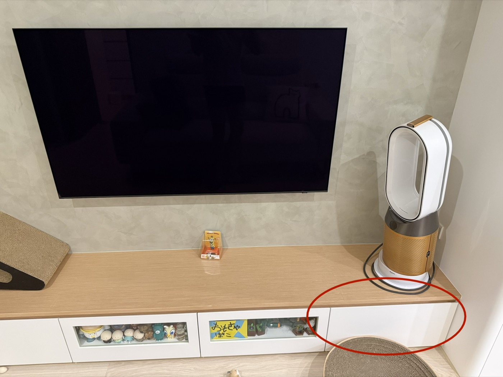
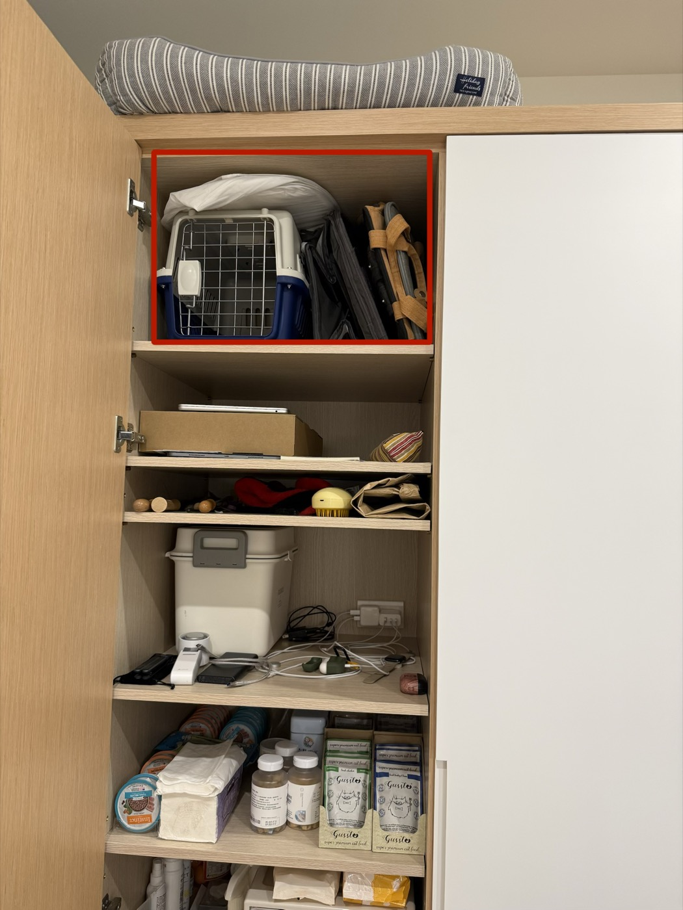